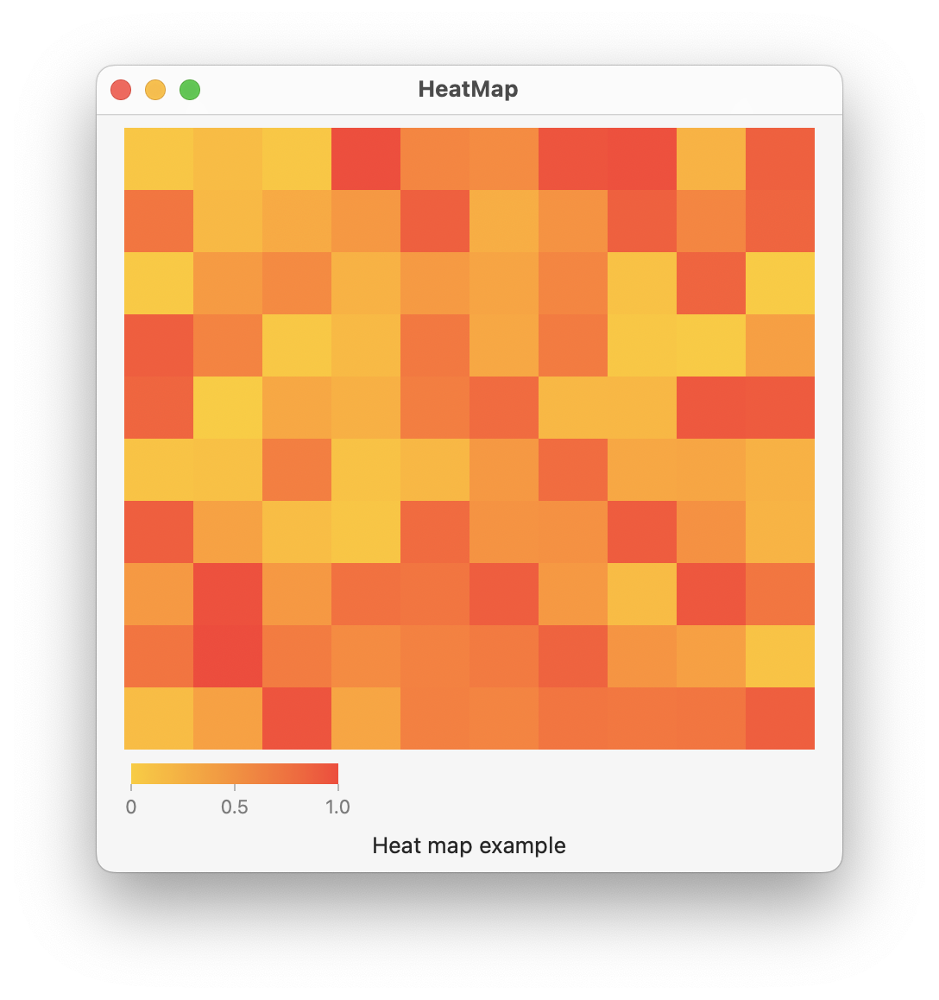

Use a RectangleMark() in a Swift Chart to create a 2D heat map of data. In this example, faint lines may appear on the chart if the frame size is not evenly divisible by the number of marks.

import SwiftUI
import Charts
struct Point: Hashable, Identifiable {
let id = UUID()
let x: Int
let y: Int
let val: Float
}
struct Grid {
let rows: Int
let columns: Int
var points = [Point]()
init(rows: Int, columns: Int) {
self.rows = rows
self.columns = columns
generateData()
}
mutating func generateData() {
for i in 0..<rows {
for j in 0..<columns {
let v = Float.random(in: 0...1)
let point = Point(x: j, y: i, val: v)
points.append(point)
}
}
}
}
struct ContentView: View {
@State private var grid = Grid(rows: 10, columns: 10)
var body: some View {
VStack {
Chart(grid.points) { point in
RectangleMark(
xStart: .value("xStart", point.x),
xEnd: .value("xEnd", point.x + 1),
yStart: .value("yStart", point.y),
yEnd: .value("yEnd", point.y + 1)
)
.foregroundStyle(by: .value("Weight", point.val))
}
.chartYAxis(.hidden)
.chartXAxis(.hidden)
.chartForegroundStyleScale(range: Gradient(colors: [.yellow, .red]))
.frame(width: 400, height: 400)
Text("Heat map example")
}
.padding()
}
}
Swift Programming for macOS © 2023
Built by Gavin Wiggins